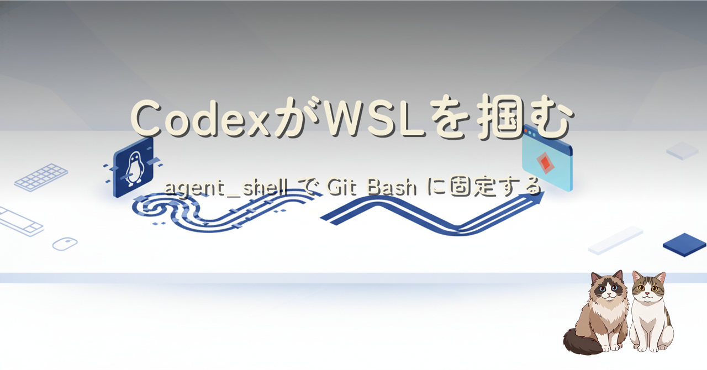

Windows で Codex CLI に .sh スクリプトを実行させたら、頼んでもいない WSL が立ち上がって CRLF で失敗。原因は PATH を見ずに bash を解決する Codex 特有の挙動でした。config.toml の agent_shell 設定とグローバル AGENTS.md の二重対策で Git Bash に固定するまでの記録です。
Codex CLI は普段のコマンドを PowerShell で実行するため気づきにくいのですが、.sh スクリプトを実行するときだけ bash を自前解決し、Git Bash が PATH に居ても WSL のランチャー(C:\Windows\System32\bash.exe)を掴んでしまいます(公式 issue #3159)。~/.codex/config.toml に [windows] agent_shell = "git-bash" を書けば Git Bash に固定でき(issue #16717 で実装)、保険としてグローバル AGENTS.md に WSL 禁止の指示を明文化する二重対策と、uname による検証方法をまとめました。